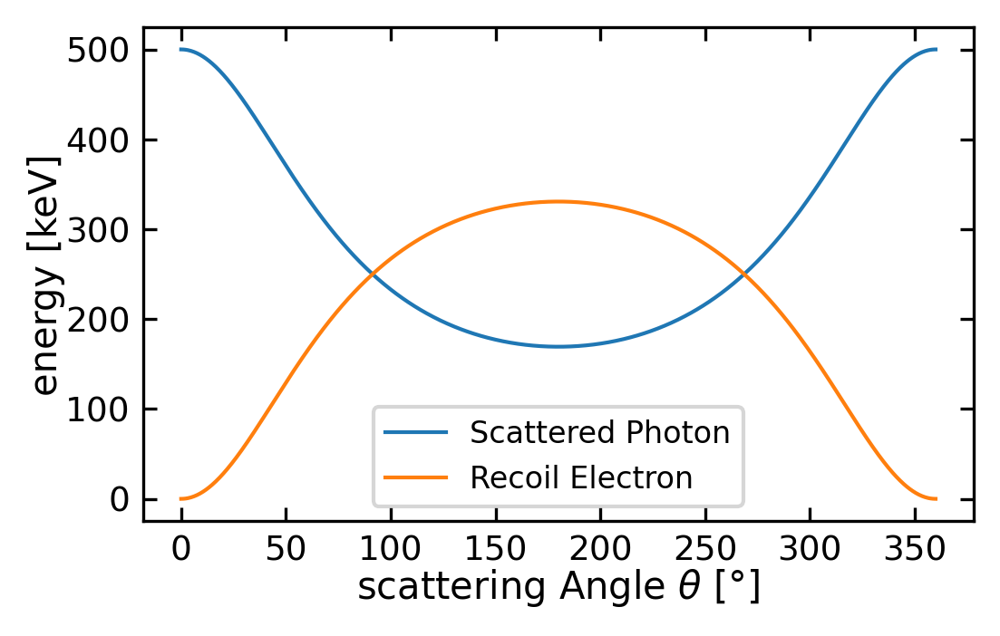
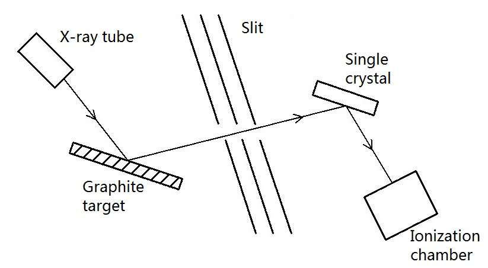
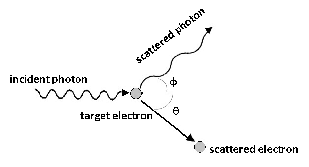
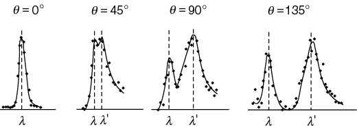
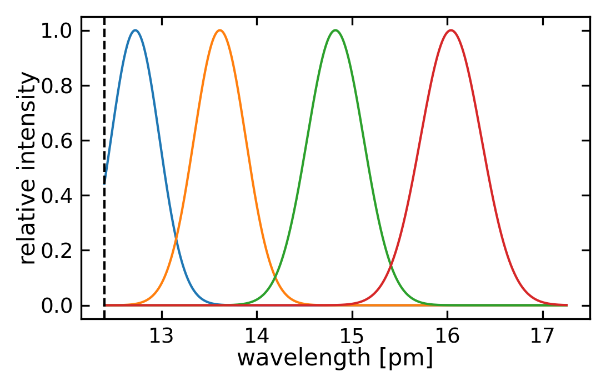
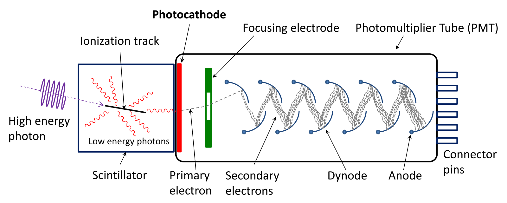
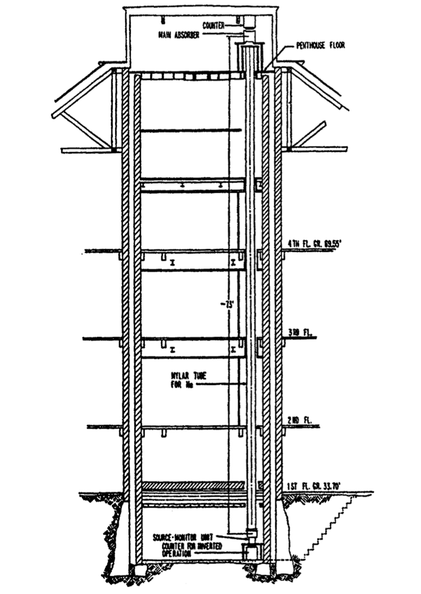
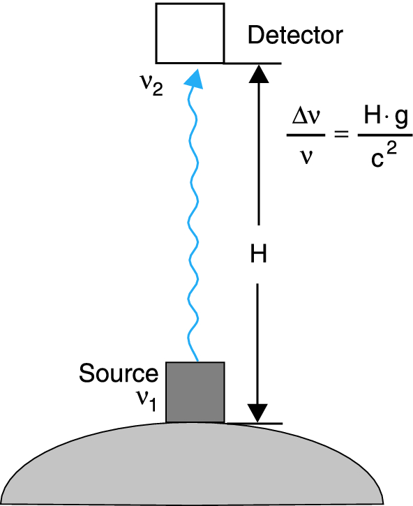

36 Particle Nature of Light
36.1 The Wave-Particle Nature of Light
The nature of light has been a subject of scientific debate since the 17th century. Newton proposed a particle theory based on light’s straight propagation and refraction, while Huygens advocated a wave theory supported by interference and diffraction phenomena. The wave interpretation gained strong support when Heinrich Hertz discovered electromagnetic waves, with light being interpreted as a special spectral region governed by Maxwell’s equations.
However, at the beginning of the 20th century, several experimental findings emerged that could not be explained by classical electromagnetic theory:
- The photoelectric effect, where light ejects electrons from metals
- The Compton effect, showing light scattering like particles
- The ultraviolet catastrophe in black body radiation
These observations revealed fundamental limitations in both classical mechanics and electromagnetic wave theory for describing atomic-scale phenomena. This document examines the experimental evidence that established light’s particle nature while maintaining its wave characteristics.
36.2 The Photoelectric Effect
36.2.1 Hallwachs and Lennard’s Discoveries
In 1888, Wilhelm Hallwachs discovered that ultraviolet light could cause negatively charged metal plates to lose their charge. Using charged foils connected to an irradiated metal plate, he observed that: - Negative charges decreased upon UV irradiation - Positive charges remained unchanged
This suggested that light was somehow causing electrons to leave the metal surface. ### Hallwachs and Lennard
In 1888 Wilhelm Hallwachs published an experiment with charged foils connected to a metal plate which was irradiated with ultraviolet light (we did this experiment in the last lecture before Christmas). If the foils and the plate are negatively charged and electrically isolated against the surrounding, the charge does decrease upon irradiation with ultraviolet light. In contrast, if the system is positively charged, the charge does not decrease. Hallwachs concluded that the light is responsible for negative charges leaving the metal plate.

Later in 1902 Lennard measured the photocurrent between two plates in vacuum. The current set in already at a negative voltage \(U_0\) between the plates, increased with rising voltage, and reached a plateau which depended only on the light’s intensity. He concluded:
The electrons must bear a minimum energy in order to overcome the oppositely directed electric field, \(E_{\mathrm{kin}} \le e \cdot U_0\).
The kinetic energy \(m v^2/2\) of the photoelectrons depends on the frequency \(\nu\) of the light, not on the light’s intensity.
The number of photoelectrons is proportional to the light’s intensity.
There is no delay between light irradiation and electron emission.
36.2.2 Classical Wave Theory Expectations
If we assume a fully wave-like behavior of light, then light with a radiation power of \(P_{\mathrm{L}}\) might hit a surface with an area \(A\) and shares its energy equally between all electrons. For a penetration depth of \(\Delta z \approx \lambda\) and a density of the conducting electrons of \(N\), then every conducting electron gets on average the energy of
\[ \bar{\Delta W} = \frac{P_\mathrm{L}}{N \cdot A \cdot \lambda} \; \Delta t \] within the time interval \(\Delta t\). Thus, the work function can be compensated in the case of
\[ \Delta t > W_{\mathrm{a}} \; \frac{N \cdot A \cdot \lambda}{P_\mathrm{L}} \mathrm{.} \]
Let us consider a zinc plate with a work function of \(W_{\mathrm{a}} = 4 \, \mathrm{eV}\) and a light source with a spectral filter \(\lambda = 250 \; \mathrm{nm}\) emitting a power of \(P_\mathrm{L} = 1 \; \mathrm{W}\) at a distance of \(R = 1 \; \mathrm{m}\) away from our zinc plate, there will be an intensity of
\[ I_{\mathrm{L}} = \frac{P_\mathrm{L}}{4\pi R^2} \approx 8\cdot 10^{-6} \; \frac{\mathrm{W}}{\mathrm{cm}^{-2}} \]
reaching the plate. For a penetration depth of \(\Delta z \approx \lambda\) this intensity will be distributed between
\[ N = 10^{23} \cdot \mathrm{cm}^{-3}\cdot \lambda = 2.5 \cdot 10^{18} \; \frac{1}{{\mathrm{cm}^{-2}}} \]
electrons, whereas each electron acquires on average a power of
\[ P_{\mathrm{el}} = 3 \cdot 10^{-24} \; \mathrm{W} = 2 \cdot 10^{-5} \; \mathrm{eVs}^{-1} \mathrm{.} \]
Thus, it will take a time of \(\Delta t = W_{\mathrm{a}}/P_{\mathrm{el}} = 2 \cdot 10^5 \; \mathrm{s}\) for one electron to acquire enough energy to leave the zinc plate. This result is in clear contrast to experimental findings.
36.2.3 Einstein’s Quantum Explanation
In 1905, Einstein proposed a revolutionary explanation based on light quanta (photons). According to this model: - Light energy is transmitted in discrete packets of energy \(E = h\nu\) - Each photon interacts with a single electron - The photon’s entire energy transfers to the electron
This led to Einstein’s photoelectric equation:
\[ E_{\mathrm{kin}}^{\mathrm{max}} = h \cdot \nu - W_{\mathrm{a}} \mathrm{,} \]
with \(W_{\mathrm{a}} = -e \left( \phi_{\mathrm{vac}} - \phi \right)\) being the work function of the cathode material (often the vacuum work function is set to zero, \(\phi_{\mathrm{vac}} = 0\)). The work function is the amount of energy one has to compensate in order to bring one electron from bulk into vacuum against the forces binding the electron in bulk.
The work function determines at which frequency or wavelength the photoelectric effect occurs. Below are typical work functions for various metals:
| Metal | Work Function (eV) | Threshold Wavelength (nm) |
|---|---|---|
| Cesium | 1.95 | 636 |
| Potassium | 2.30 | 539 |
| Sodium | 2.75 | 451 |
| Calcium | 3.20 | 388 |
| Zinc | 4.31 | 288 |
| Copper | 4.70 | 264 |
| Silver | 4.73 | 262 |
| Platinum | 6.35 | 195 |
These values show why alkali metals like cesium and potassium are particularly suitable for photoelectric devices, as they respond to visible light, while metals like platinum require ultraviolet radiation.
Since one can determine the maximum kinetic energy \(E_{\mathrm{kin}}^{\mathrm{max}} = -e\cdot U_0\) (\(U_0 < 0\)) from the voltage \(U_0\) at which the photocurrent sets in and
\[ -e\cdot U_0 = h\cdot\nu - W_{\mathrm{a}} \mathrm{,} \]
one is able to determine the work function on the basis of the intercept of the \(-e\cdot U_0\) vs. \(h\cdot\nu\) curve and Planck’s constant from the slope of the curve.
36.2.4 Experimental Verification
The definitive test of Einstein’s photon theory came from Joffé and Dobronrawov in 1925. They used small, charged bismuth beads held within a Millikan capacitor and irradiated those beads with low-dose X-rays. Every change of the overall charge of the beads interferes with the equilibrium in the capacitor, and can be observed by means of a change of the bead position. Using a radiation power of \(P = 10^{-12} \; \mathrm{W}\) meaning an emission rate of \(\dot{N} = 10^3\) photons per second with an energy of \(h \cdot \nu = 10^4 \; \mathrm{eV}\) on average every 30 minutes a change of the bead charge was detected. The number of photons arriving at one bead within a time interval \(\Delta t\) is \(Z = \dot{N} \cdot \Delta t \cdot \mathrm{d} \Omega/ \left( 4\pi \right)\), with \(\mathrm{d} \Omega\) as the solid angle covered by the bead. The calculated time constant of \(Z\) was in well agreement with the observed rate of the charge alteration. If we again assume a wave-like explanation of the photoeffect, the emitted power within the according solid angle will be absorbed by the bead and distributed between all its electrons. As a consequence the bead as a whole will have collected enough energy in order to release an electron within the same period of time. However it cannot be explained how all \(10^{12}\) atoms are supposed to combine their energy in one, single electron at the very same time.
36.3 The Compton Effect
The particle nature of light received further confirmation through X-ray scattering experiments. When X-rays of wavelength \(\lambda_0\) strike a material, the scattered radiation shows two components:
- Unshifted radiation with the original wavelength \(\lambda_0\)
- Shifted radiation with increased wavelength \(\lambda_S > \lambda_0\)
Remarkably, the wavelength shift depends primarily on the scattering angle rather than the target material, suggesting a fundamental interaction mechanism. Experiments concerning the Compoton effect were first conducted by Arthur Compton in 1923. He used X-rays with a wavelength of \(\lambda_0 = 0.154 \; \mathrm{nm}\) and observed scattered radiation with a wavelength of \(\lambda_S = 0.165 \; \mathrm{nm}\) at a scattering angle of \(\theta = 60^\circ\).


36.3.1 Theoretical Analysis
This phenomenon can be explained by treating light as particles (photons) colliding with electrons. Each photon carries: - Energy \(E = h\nu = \hbar\omega\) - Momentum \(p = h/\lambda = \hbar k\)
If a photon impacts into a weakly bound electron with a binding energy much smaller than the photon energy (\(E_\mathrm{B} \le E\)), we can neglect the binding energy and assume the electron as free electron. In addition we simplify further and assume the electron as being at rest. During the collision event
\[ h \nu_0 + \mathrm{e}^{-} \longrightarrow h \nu_{\mathrm{S}} + \mathrm{e}^{-} + E_{\mathrm{kin}} \]
energy and momentum are conserved. The law of conservation of energy then reads as
\[ h \, \nu_0 = h \, \nu_\mathrm{s} + E_{\mathrm{kin}}^{\mathrm{e}} \]
with \(E_{\mathrm{kin}}^{\mathrm{e}}\) as the relativistic kinetic energy of the electron
\[ E_{\mathrm{kin}}^{\mathrm{e}} = \frac{m_0 c^2}{\sqrt{1-\beta^2}} - m_0 c^2 \]
and \(\beta = v/c\). If we ascribe a momentum like
\[ \vec{p} = \hbar \, \vec{k} \]
with
\[ \left| \vec{p} \right| = \hbar \, \left| \vec{k} \right| = h \frac{1}{\lambda} \]
to the photon, we can formulate the law of momentum conservation as follows,
\[ \hbar \, \vec{k_0} = \hbar \, \vec{k_{\mathrm{s}}} + \vec{p^{\mathrm{e}}} \]
with
\[ \vec{p^{\mathrm{e}}} = \frac{m_0 \vec{v}}{\sqrt{1-\beta^2}} \mathrm{.} \]
If we isolate the square of the momentum of the electron, we obtain an equation depending on the squared difference between the wavevectors of the incident and scattered photon. Calculating this difference leads to a scalar product between these two vectors and necessitates the introduction of the angle between the propagation direction of the incident and scattered photon. We denote this angle as \(\phi\),
\[ \begin{aligned} \frac{m_0^2 v^2}{1-\beta^2} &= \hbar^2 (\vec{k_0} - \vec{k_{\mathrm{s}}})^2 \\ &= \hbar^2(k_0^2 + k_{\mathrm{s}}^2 - 2k_0k_{\mathrm{s}}\cos(\varphi)) \\ &= \frac{h^2}{c^2}(\nu_0^2 + \nu_{\mathrm{s}}^2 - 2\nu_0\nu_{\mathrm{s}}\cos(\varphi)) \end{aligned} \]
where:
- \(m_0\) is the rest mass
- \(v\) is velocity
- \(\beta = v/c\)
- \(k_0, k_s\) are initial and scattered wave vectors
- \(\nu_0, \nu_s\) are initial and scattered frequencies
- \(\varphi\) is the scattering angle
From the law of energy conservation we get
\[ \frac{m_0^2 v^2}{1-\beta^2} = \frac{h^2}{c^2} \left( \nu_0 - \nu_{\mathrm{s}} \right)^2 + 2 h m_0 \left( \nu_0 - \nu_{\mathrm{s}}\right) \mathrm{,} \]
which we can compare with the law of momentum conservation and get
\[ \nu_0 - \nu_{\mathrm{s}} = \frac{h}{m_0 c^2} \, \nu_0 \, \nu_{\mathrm{s}} \, \left(1- \cos \left( \varphi \right) \right) \mathrm{.} \]
Now making use of \(1- \cos \left( \varphi \right) = 2 \sin^2 \left( \varphi/2 \right)\) and \(\nu = c/\lambda\) we achieve the Compton formula
\[ \begin{aligned} \lambda_{\mathrm{S}} & = & \lambda_0 + 2 \frac{h}{m_0 c} \sin^2 \left( \varphi/2 \right)\\ {} & = & \lambda_0 + 2 \lambda_{\mathrm{C}} \sin^2 \left( \varphi/2 \right)\\ \end{aligned} \]
with \(\lambda_{\mathrm{C}}\) denoting the Compton wavelength of the electron,
\[ \lambda_{\mathrm{C}} = \frac{h}{m_0 c} = 2.4262 \cdot 10^{-12} \; \mathrm{m.} \]
The Compton wavelength is a constant and represents the change of the wavelength \(\Delta \lambda = \lambda_{\mathrm{S}} - \lambda_0\) at a scattering angle of \(\varphi = 90^{\circ}\). Results from experiments almost perfectly coincide with the Compton formula. Furthermore the ratio between the wavelengths
\[ \frac{\lambda_{\mathrm{S}}}{\lambda_0} = \frac{h \nu_0}{m_0 c^2} \]
(replace with ?? \[ \frac{\nu_s}{\nu_0} = \frac{1}{1 + \frac{h\nu_0}{m_0c^2}(1-\cos(\varphi))} \] ) represents the ratio between the energy of the incident photon and the energy of the electron at rest. Thus, if we know the mass of the electron, we can determine \(\varphi\) and \(\lambda_{\mathrm{S}}\) (and therefore \(\lambda_{\mathrm{C}}\)) and calculate \(h\).
36.3.2 Experimental Results
The plots below show the observed relative scattering intensity of photons at different wavelength for different scattering angles from an experiment using XXX photons scattered on a YYY target. The plots comprise an elastic scattering peak at the wavelength of the incident photons and an inelastic scattering peak at a longer wavelength, in agreement with the Compton formula.

The Klein-Nishina formula describes the differential cross-section of the Compton effect, showing how the intensity of scattered photons depends on the scattering angle and wavelength:
\[\frac{d\sigma}{d\Omega} = \frac{r_e^2}{2}\left(\frac{E'}{E_0}\right)^2\left(\frac{E'}{E_0} + \frac{E_0}{E'} - \sin^2\theta\right)\]
where:
- \(r_e\) is the classical electron radius
- \(E'\) is the scattered photon energy
- \(E_0\) is the initial photon energy
- \(\theta\) is the scattering angle

Detection of \(\gamma\) rays
High energy photons, i.e. \(\gamma\) rays can be detected by a scintillation counter. The scintillation counter consists of a scintillator, a photomultiplier tube, and a discriminator. The scintillator is a material that emits visible light when struck by high-energy photons. The emitted light is then converted into an electrical signal by the photomultiplier tube. The photomultiplier amplifies the signal through acceleration of photoelectrons (generated by the photoelectric effect) in an electric field, creating cascades of secondary electrons upon collision with metallic dynodes. The discriminator filters the output signals to reject noise and select events within specific energy ranges of interest.

Compton Continuum and Compton Edge
36.3.3 Compton Edge
The Compton edge represents the maximum energy transfer possible in a single Compton scattering event, occurring at a scattering angle of \(180°\) (backscatter). The energy of the Compton edge \((E_{CE})\) can be calculated as:
\[E_{CE} = E_0 - E'_{min} = E_0\left(1 - \frac{1}{1 + \frac{2E_0}{m_ec^2}}\right)\]
where \(E_0\) is the initial photon energy and \(E'_{min}\) is the minimum energy of the scattered photon.
36.3.4 Compton Continuum
The Compton continuum is the energy distribution of scattered photons between:
- The photopeak (original energy \(E_0\))
- The minimum energy after scattering (\(E'_{min}\) at \(180°\))
The intensity distribution across this continuum is described by the Klein-Nishina formula:
\[\frac{d\sigma}{d\Omega} = \frac{r_e^2}{2}\left(\frac{E'}{E_0}\right)^2\left(\frac{E'}{E_0} + \frac{E_0}{E'} - \sin^2\theta\right)\]
In gamma-ray spectroscopy, this appears as a broad feature in the energy spectrum, with:
- A sharp cutoff at the Compton edge
- Declining intensity towards lower energies
- A backscatter peak at low energies corresponding to \(180°\) scattering
36.4 Properties of Photons
Having established light’s particle nature through the photoelectric and Compton effects, we can now summarize the fundamental properties of photons. These quantum particles unite the classical wave description of light with its particle behavior.
36.4.1 Energy and Momentum
Every electromagnetic field consists of energy quanta \(h\nu\), which we call photons. For a cavity resonator, the electromagnetic energy density is:
\[ \omega_{\mathrm{em}} = n \cdot h \cdot \nu \mathrm{.} \]
We can further comprehend the flux \(I = \varepsilon_0 c E^2\) of an electromagnetic wave as a particle flux \(\dot{N}\) of photons
\[ I = \dot{N} h \nu \]
with \(\dot{N} = n \cdot c\). Therefore, if a light wave with a flux of \(I\) is shining on an area is tantamount with a particle flux of photons reaching this area.
As demonstrated on the basis of the Compton effect, every photon bears a momentum \(\vec{p} = \hbar \cdot \vec{k}\) with the magnitude \(\left| \vec{p} \right| = p = h \nu / c\). As a consequence, if we are able to assign an energy density to the density of modes, we are also able to assign a momentum density,
\[ \pi_{\mathrm{em}} = n \cdot \hbar \cdot k \mathrm{.} \]
Then, the relation between the energy density \(\omega_{\mathrm{em}}\) of an electromagnetic wave and the momentum density \(\pi_{\mathrm{em}}\) of the very same wave reads as
\[ \omega_{\mathrm{em}} = c \cdot \pi_{\mathrm{em}} {.} \]
36.4.2 Angular Momentum
Photons carry two distinct types of angular momentum: spin angular momentum (SAM) associated with polarization, and orbital angular momentum (OAM) associated with the spatial distribution of the wavefront.
36.4.2.1 Spin Angular Momentum
The spin angular momentum is related to the polarization state of light. When a circularly polarized photon is absorbed by a free atom, the atom’s angular momentum changes by ±ħ. For left-handed circular polarized light (\(\sigma^{+}\)) propagating along \(z\), the change is \(\Delta J_z = + \hbar\), while for right-handed polarization (\(\sigma^{-}\)), it’s \(\Delta J_z = - \hbar\). The spin angular momentum vector is:
\[ \vec{S}_{Ph} = \pm \hbar \, \frac{\vec{k}}{\left| \vec{k} \right|} \]
Linearly polarized light, being a superposition of equal amounts of \(\sigma^{+}\) and \(\sigma^{-}\) light, has zero net spin angular momentum.
36.4.2.2 Orbital Angular Momentum
Photons can also carry orbital angular momentum, characterized by a quantum number \(l\):
\[ \vec{L}_{Ph} = l\hbar \, \frac{\vec{k}}{\left| \vec{k} \right|} \]
where \(l\) can be any integer. This OAM is associated with helical wavefronts and is important in applications like optical tweezers and quantum information.
The total angular momentum of a photon is the sum of both contributions:
\[ \vec{J}_{Ph} = \vec{S}_{Ph} + \vec{L}_{Ph} \]
36.4.3 Effect of Gravity on Photons
Despite having zero rest mass, photons interact with gravitational fields due to their energy-equivalent mass. From special relativity we know that mass is affected by the relative motion of reference systems:
\[ m = \frac{1}{\sqrt{1-\left( \frac{v}{c}\right)^2}} \, m_0 \]
Only particles with a rest mass \(m_0 = 0\) can travel at the speed of light, which is why photons must have zero rest mass. For the energy of a photon, we find:
\[ \begin{aligned} E & = \sqrt{p^2c^2 + m_0^2 c^4}\\ {} & = p c\\ {} & = \frac{h}{\lambda} c\\ {} & = h \nu \end{aligned} \]
in accordance with previous energy and momentum considerations. If we assign an effective mass \(m\) to the photon:
\[ m = \frac{E}{c^2} = \frac{h \nu}{c^2} \]
this photon must perform work when traveling in a gravitational field. Moving from position \(\vec{r_1}\) with gravitational potential \(\Phi(\vec{r_1})\) to position \(\vec{r_2}\) with potential \(\Phi(\vec{r_2})\), the work is:
\[ W = m \cdot \Delta \Phi = \frac{h \nu}{c^2} \left( \Phi \left( \vec{r_2} \right) - \Phi \left( \vec{r_1} \right) \right) \]
By energy conservation, the photon’s energy \(h\nu\) must change by this amount, leading to a frequency shift:
\[ \nu_2 = \nu_1 \left(1-\frac{\Delta \phi}{c^2} \right) \]
or in relative terms:
\[ \frac{\Delta \nu}{\nu} = \frac{\Delta \Phi}{c^2} \]
This remarkable prediction - that photons experience a redshift (longer wavelength, smaller frequency, lower energy) when rising in a gravitational field - was first experimentally verified by Pound and Rebka in 1959. Using the Mössbauer effect, they measured the frequency shift of gamma rays from \(^{57}\)Fe (14.4 keV) traveling vertically over a height of 22.5 meters at Harvard University. The expected relative frequency shift was extremely small:
\[ \frac{\Delta \nu}{\nu} \approx 2.5 \times 10^{-15} \]


The Mößbauer Effect in the Pound-Rebka Experiment
The detection of gravitational redshift requires extremely precise frequency measurements (\(\Delta \nu/\nu \approx 10^{-15}\)). This was made possible by the Mößbauer effect, which allows for recoil-free emission and absorption of gamma rays in crystals.
In free atoms, the emission or absorption of a gamma ray causes recoil, shifting the photon energy by about \(10^{-3}\) eV. For a gamma ray of energy \(E_\gamma\), the recoil energy is:
\[E_R = \frac{E_\gamma^2}{2Mc^2}\]
where \(M\) is the mass of the nucleus. However, in a crystal lattice, the nucleus is not free to recoil. Instead, the recoil momentum can be transferred to the entire crystal if:
- The nucleus is tightly bound in the crystal lattice
- The recoil energy is less than the energy of the lowest lattice vibration (phonon)
- The entire crystal acts as a single quantum mechanical system
In this case, the effective mass \(M\) in the recoil energy formula becomes the mass of the entire crystal, making \(E_R\) negligible. For \(^{57}\)Fe nuclei in a crystal:
- Gamma ray energy: 14.4 keV
- Natural linewidth: \(\approx 10^{-8}\) eV
- No recoil broadening
- Extremely sharp resonance
This allows for the detection of the tiny frequency shifts caused by gravity over the 22.5 m height difference in the Harvard tower.
The success of the Pound-Rebka experiment demonstrates how quantum mechanics and general relativity make consistent predictions about photon behavior, though a complete quantum theory of gravity remains one of physics’ greatest challenges.